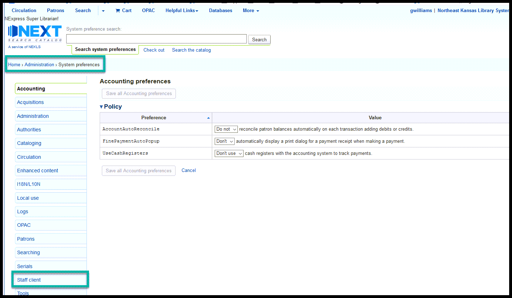
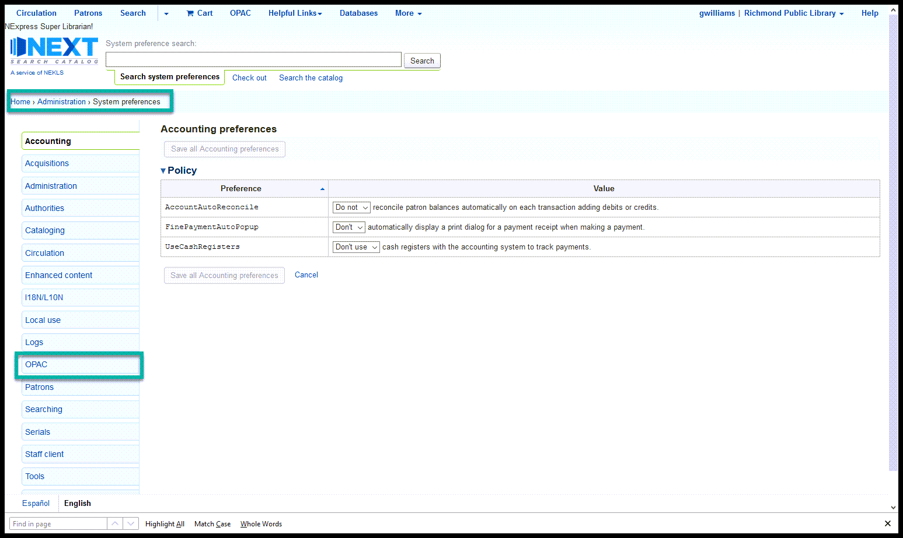
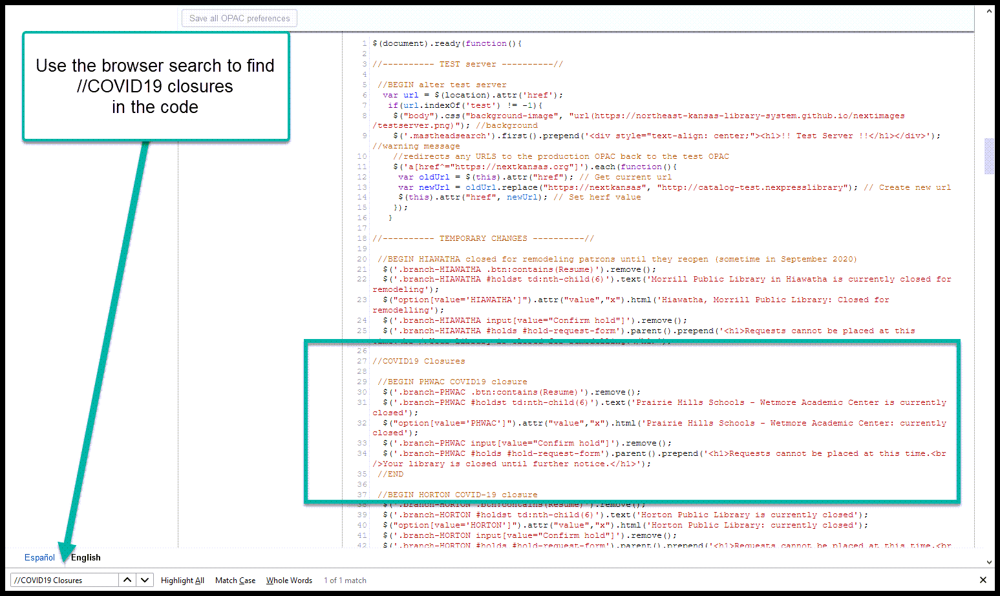
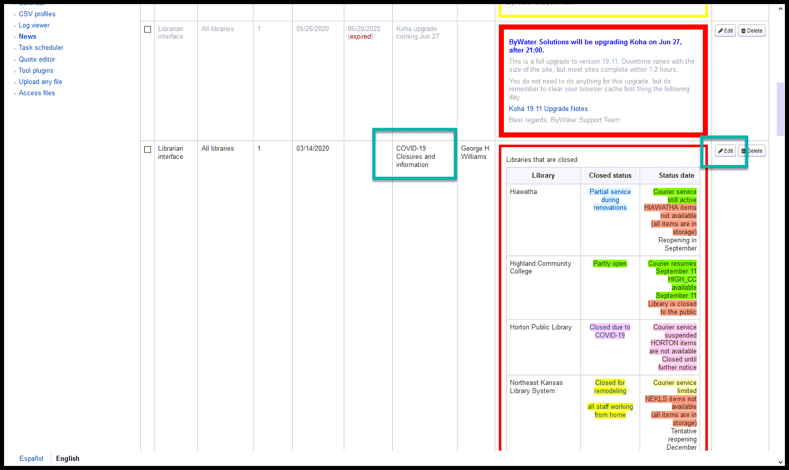

COVID-19 closure¶
These changes can be made in any order, but it’s better to change the circulation rules and the jQuery first to prevent patrons from placing reqeusts while you’re making the changes.
Circulation rules¶
Go to Home > Administration > Circulation and fine rules and choose the library that needs to be closed from the “Select a library” dropdown

Go to the section of the page titled “Default checkout, hold and return policy for LIBRARYNAME” and change the variables as follow:
- Total current checkouts allowed - no change
- Total current on-site checkouts allowed - no change
- Maximum total holds allowed (count) - no change
- Hold policy - CHANGE TO “No holds allowed”
- Hold pickup library match - CHANGE TO “Item’s home library”
- Return policy - CHANGE TO “Item returns home”
- Once the variables are set, click on the “Save” button
Staff client JS¶
Go to Home > Administration > System preferences and click on the “Staff client” tab
Scroll down to the “IntranetUserJS” preference and click on “Edit with Code Mirror”

Do a browser search for “//COVID19 closures”

Immediately after
//COVID19 closures
Add a new line and then add these two pieces of jQuery to this system preference in this location
//BEGIN XLIBRARYX COVID19 closure
$('.XLIBRARYX #breadcrumbs').prepend('<h1 class="closed" style="text-align: center;">Your library is currently listed as <span style="font-style: italic; text-decoration: underline;">Closed until XDATEX</span> on the OPAC.</h1>');
$("#pickup option[value='XLIBRARYX']").attr("value","X").html('XLIBNAMEX is currently closed to new requests');
//END
Change the values in the code above as follows:
| Value | Replace with |
|---|---|
| XLIBRARYX | Library code from Koha |
| XLIBNAMEX | Library name |
| XDATEX | Reopening date |
Click on “Save all Staff Client preferences”
OPAC JS¶
Go to Home > Administration > System preferences and click on the “OPAC” tab
Scroll down to the “OPACUserJS” preference and click on “Edit with Code Mirror”

Do a browser search for “//COVID19 closures”
Immediately after
//COVID19 closures
Add a new line and then add these two pieces of jQuery to this system preference in this location
//BEGIN XLIBRARYX COVID19 closure
$('.branch-XLIBRARYX .btn:contains(Resume)').remove();
$('.branch-XLIBRARYX #holdst td:nth-child(6)').text('XLIBNAMEX is currently closed');
$("option[value='XLIBRARYX']").attr("value","x").html('XLIBNAMEX: currently closed');
$('.branch-XLIBRARYX input[value="Confirm hold"]').remove();
$('.branch-XLIBRARYX #holds #hold-request-form').parent().prepend('<h1>Requests cannot be placed at this time.<br />Your library is closed until XDATEX.</h1>');
//END
Change the values in the code above as follows:
| Value | Replace with |
|---|---|
| XLIBRARYX | Library code from Koha |
| XLIBNAMEX | Library name |
| XDATEX | Reopening date |
Click on “Save all OPAC preferences”
News block¶
Go to Home > Tools and open the “News” Tools

Find the news item titled “COVID-19 Closures and information” and click on “Edit”
Click on the <> icon to edit the raw html of the news Item

Find the spot in the existing news items where the library you are closing will fit alphabetically and insert:
<tr>
<td>XLIBNAMEX</td>
<td style="text-align: center;"><a href="XLIBURL" target="_blank" rel="noopener"><span style="background-color: pink;">Closed</span></a></td>
<td style="text-align: right;"><span style="background-color: pink;">Courier service suspended</span><br /><span style="background-color: pink;">XLIBRARYX items are not available</span><br /><span style="background-color: pink;">Tentative reopening on XDATEX</span></td>
</tr>
Change the values in the HTML above as follows:
| Value | Replace with |
|---|---|
| XLIBRARYX | Library code from Koha |
| XLIBNAMEX | Library name |
| XLIBURL | URL for the library |
| XDATEX | Reopening date |
Click on “Save” after necessary changes have been made.
After saving, you should verify that the information is accurate and looks correct and click on “Submit” to finalize the changes
When you return to the home page in the staff client, the updates should appear on the left hand side of the homepage

Suspend unfilled requests¶
Go to Home > Reports > Guided reports wizard > Saved reports and search for report 3276
Run report 3276 “GHW - Find unfilled/not-suspended requests for a library” choosing the closed library
Click on each link in the “LINK” column to go to the account of each patron with unfilled requests for this pickup Library
Suspend each request until the day before the library is expected to reopen
If the closure is “Until further notice” estimate a date for reopening - leaving the date blank will require that someone manually un-suspends each request, so it’s better to make a bad guess than have to figure out which requests were made by staff as opposed to those made by patrons
Repeat this process for each link in the report
Suspended requests will look like this:
Due dates¶
Go to Home › Tools and click on “Batch extend due dates”
Select the following checkout criteria:
| Patron categories | Leave blank |
| Libraries | Choose the one that’s closing |
| Due date from | Choose the date the closure began |
| Due date to | Choose the date the closure will end |
Then choose one of the two “New due date” options
| Choose one of the following | Options |
|---|---|
| Hard due date | Set a date for all items (not recommended) |
| Or add number of days | Adds X number of days to an item’s current due date (recommended) |
Then click “Continue”
This will give you a a list of items that will be modified - if everything looks good, click on “Modify selected checkouts”
Depending on the size of the library, it may take several minutes for this process to run.
If you get a timeout or proxy error, it is probably because the web page timed out. The due date update process is probably continuing to work in the database, but the Apache server timed out. The best way to check to see if the process finished is to wait 15 minutes and re-start the process to see if there are still any items left that did not update. If there are items that did not update, you can adjust the “Due date from” and “Due date to” varialbes to update the items in smaller batches.
When the process finishes normaly, you should see a screen like this:
email¶
Send an e-mail to next@lists.nekls.org informing all of the Next Search Catalog members about the closure.
Here’s a template for an e-mail:
Hello all,
We are temporarily pausing courier service for XLIBNAMEX due to COVID-19 concerns.
At this time we are stopping courier deliveries to XLIBNAMEX.
Please remember that, if any of your staff tests positive for COVID-19, you need to contact courier@nekls.org as soon as possible so we can implement the courier's COVID-19 procedures.
Any items that are already in-transit to XLIBRARYX will be held at the courier distribution hubs and . If your library checks in any items that are owned by XLIBRARYX, please hold them at your library for the present. All unfilled requests for pickup at XLIBRARYX have been suspended until XDATEX.
Currently our hope is that we will resume courier service to XLIBRARYX on XDATEX.
Change the values in the email above as follows:
| Value | Replace with |
|---|---|
| XLIBRARYX | Library code from Koha |
| XLIBNAMEX | Library name |
| XDATEX | Reopening date |